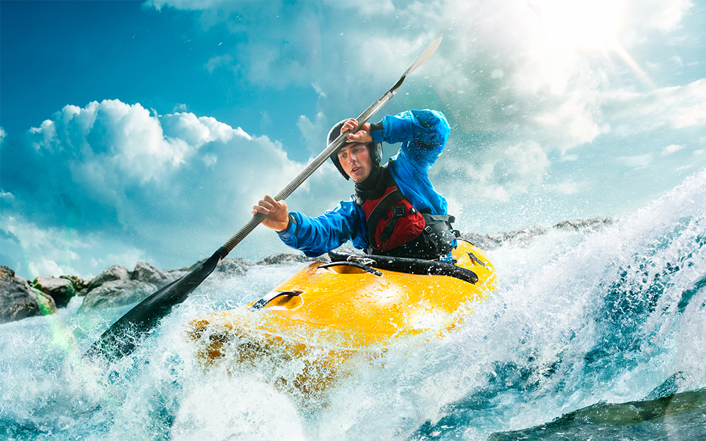
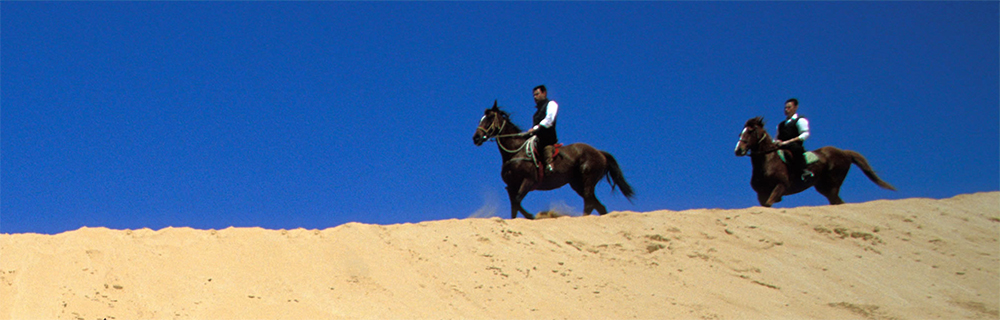
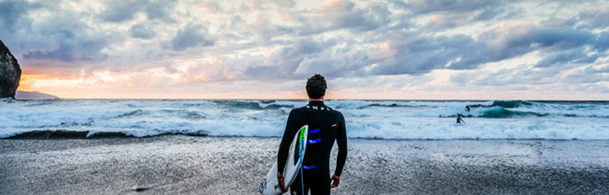
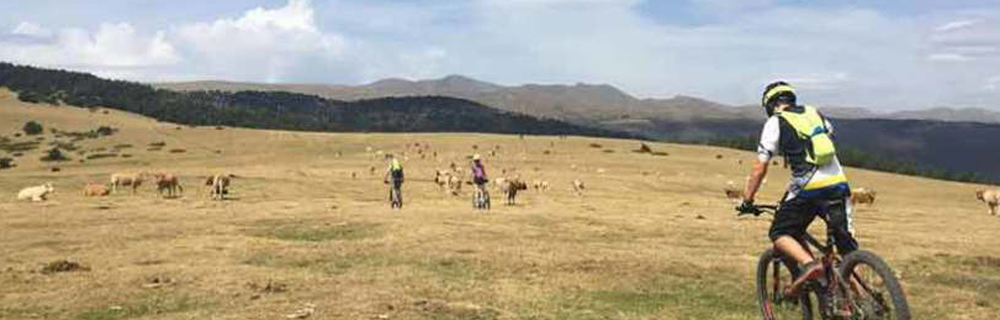

Ofrecemos excursiones guiadas con Kayak de travesía desde los mejores sitio para explorar la Costa Brava. Podrás descubrir rincones escondidos, calas inaccesibles y cuevas de gran belleza.

Paseo a caballo la actividad tiene una duración aproximada de 1 hora, que se realiza por la zona de Collserola.
Diá blanco ven a esquiar.
¿Te gustaría planear sobre el agua y bajo el sol mientras sientes la adrenalina orriendo por tus vena? No lo pienses más.

Descubre los rincones mágicos de la Bahía de Fornells en Menorca mientras practicas deporte, apúntate
Surf en Menorca.

Paseo a en bici excursión durante todo el día, disfrutamos de la naturaleza. Con nuestros guias especializados.
Paseo a caballo la actividad tiene una duración aproximada de 1 hora, que se realiza por la zona de Collserola.